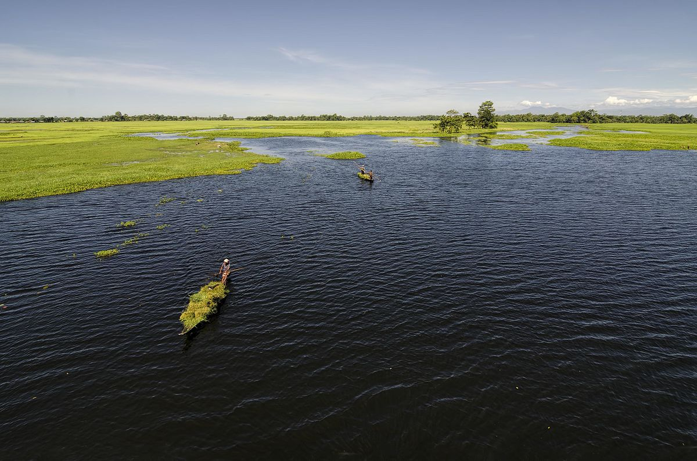
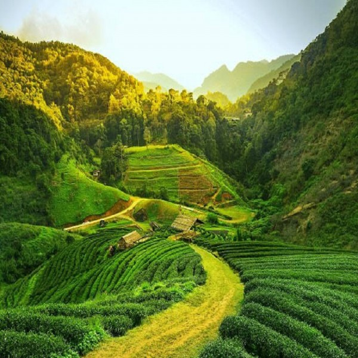
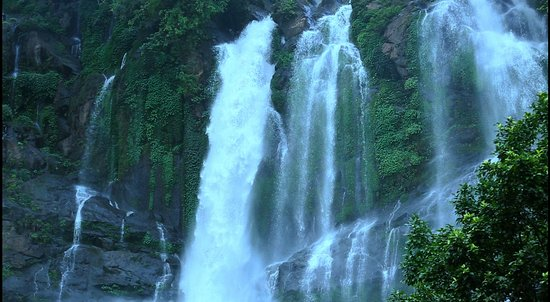

WORLD THROUGH
TRAVEL
Assam
1 Kamakhya Temple
There is a famous temple in India called the Kamakhya Temple, which is located in Guwahati, Assam. The Kamakhya Temple is dedicated to the goddess Kamakhya, who is considered a form of the goddess Shakti. It is one of the oldest and most revered Shakti peethas (holy sites associated with the goddess Shakti) in India.
The Kamakhya Temple is situated on the Nilachal Hill and is known for its unique architecture and religious significance. It attracts a large number of devotees and pilgrims throughout the y
 Save My Trip
Save My Trip
2 Majuli Island
Majuli is a river island located in the Brahmaputra River in the state of Assam, India. It is considered to be the largest river island in the world and is known for its unique cultural and ecological significance.
Majuli is formed by the Brahmaputra River dividing into multiple channels, with the island situated in between. The island covers an area of around 880 square kilometers (340 square miles) during the dry season and expands during the monsoon when the river floods.
The island is home to various indigenous communities, including the Mishing and Deori tribes, who have preserved their rich cultural heritage and traditional way of life. Majuli is known for its vibrant festivals, traditional dance forms like the Raas and Bihu, and handicrafts made by the local communities.

Save My Trip
3 Tea Plantation
Tea plantations in Assam are vast stretches of lush greenery, covering the hills and valleys of the region. The plantations are characterized by manicured rows of tea bushes, often extending as far as the eye can see. The sight of rolling hills covered in tea gardens is a picturesque and iconic image of Assam.
Visiting a tea plantation in Assam offers a unique opportunity to witness the tea production process, learn about tea cultivation, and experience the serene beauty of the tea gardens. Many tea estates in Assam welcome visitors and provide guided tours that offer insights into the tea-making process.
During a visit to a tea plantation, you can learn about the various stages of tea production, from plucking the tea leaves to processing and packaging. You might get a chance to observe the skilled workers plucking the young tea leaves and learn about the different types of tea produced, including black tea, green tea, and specialty teas.

Save My Trip
4 Karbi Anglong
Karbi Anglong is an autonomous district located in the state of Assam, India. It is situated in the central part of Assam and is known for its picturesque landscapes, rich biodiversity, and vibrant indigenous culture.
The district of Karbi Anglong is named after the Karbi people, who are the major ethnic group inhabiting the region. The Karbi people have a distinct culture, language, and traditional practices that contribute to the cultural diversity of Assam.
The district is blessed with natural beauty, including lush green hills, dense forests, and meandering rivers. It is home to numerous wildlife sanctuaries and national parks, such as the Kaziranga National Park, Manas National Park, and Nameri National Park, which are known for their diverse flora and fauna.
Karbi Anglong is also famous for its vibrant festivals, showcasing the cultural heritage of the Karbi people. The most significant festival celebrated in the district is the Karbi Youth Festival, which features traditional dance performances, music, sports, and various cultural activities.

Save My Trip